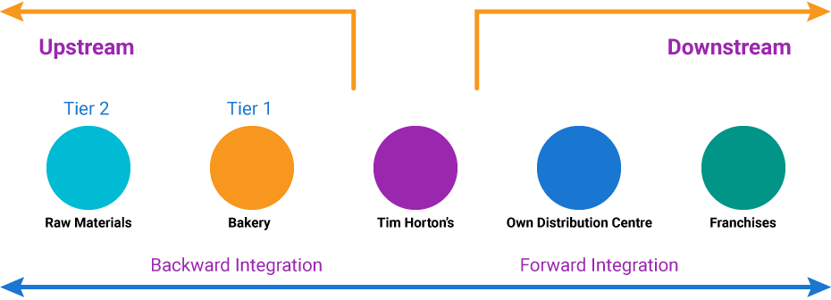

In this section, we are going to examine the six steps in the Strategic Sourcing Process then finish with the Procure to Pay (P2P) process. Throughout these processes it is important to understand the different elements and identify ways to improve the long-term business performance by better understanding sourcing needs, developing sourcing strategies, selecting suppliers, and managing the supply base. Then, the Procure to Pay (P2P) phase winds up the sourcing with the procurement through to the financial payment of the sources.
The first step is to quantitatively assess the current spending patterns (Spend Analysis) and identify opportunities for improvement. Questions like the ones noted in your text need to be answered (Lopers et al., 2016, p. 123):
In this second step, you need to develop the internal needs of the organization (category profiles) and characteristics of the external supply base (industry analysis).
Now that you know what is currently happening and what your needs are, plus, what is happening in the competitive environment, you need to develop a sourcing strategy. This will include decisions around:
The Make-or-Buy decision boils down to “should we make it internally?” or “should we buy what we need from someone else?”
Making it in-house certainly gives a company control and they can watch over the process from start to finish. Plus, if the purchases are part of other needs, economies of scale might be realized (savings on large volumes).
On the other hand, capital investment might be needed which therefore reduces the ability of the company to invest in other projects. In addition, they might be missing out on purchasing from a “best in class” supplier.
Buying it (outsourcing) means a company’s money is not tied up and they could avoid large financing charges. Plus, maybe that outside supplier can do it better.
However, if not chosen wisely, the problems with choosing a poor supplier could be detrimental too! Your company might lose control over important parts of the ultimate product or service resulting in a poor end product. The challenges of communication and coordinating with an outside supplier, who might even be located in a different country with different languages or customs or expectations, could tie up a lot of effort and resources. Plus, there are more chances of supply chain interruptions—think shipping accidents, poor weather, information outages, or, what if they engage in practices that are different from your company’s ethics or corporate social responsibility stance that might reflect badly on you? Child labour, pollution, piracy, not enforcing customer privacy just to name a few.
What if you decide that outsourcing is not for you and that more control over your supply chain should be a corporate priority? You could then decide to use Vertical Integration (not in text). That is the process by which you take control over other parts of your supply chain by purchasing or creating them.
A good example is a Canadian company that some of you might have heard of – Tim Horton’s. To gain control over their suppliers they Backward Integrated by buying the source of their baked goods (Bakerite Foods later bought by Maple Leaf Foods). To reduce variation in their delivery schedules, they Forward Integrated by building a distribution Centre and added a truck fleet in Guelph ON to serve eastern Canada. They now have control over supply, retail and distribution to better serve their customers. One of the reasons why Burger King bought Tim Horton’s was to use their efficient and effective Canadian Distribution network. Figure 3 shows this backward and forward vertical integration.
A Total Cost Analysis can be tricky as internal costs (to make) may be direct and indirect (shared over a large number of processes or people). Outsourcing is easier as the other company gives you a price. There might be additional shipping or receiving costs but basically there is an invoiced amount. Definitely easier to evaluate the cost per piece or service.
The other factor to consider is time. Will this be a long term commitment or would this be a short term outsourcing contract? It definitely affects the outcome.
The last part of the strategy should look at how many suppliers should we use? Should we source from one or multiple sources? If multiple suppliers are being examined, should we share the contracts evenly through multiple sources or use different suppliers for different pieces (cross-sourcing) but knowing each one could step in should a need arise. Table 5.10 on page 133 of the text is invaluable to compare the advantages and disadvantages for single or multiple sourcing (Lopers et al., 2016, p. 133).
With the appropriate sourcing strategy in place it is now time to evaluate current and potential suppliers. This is not easy as you need to look at quantitative and qualitative factors. Often a Request for Information (RFI) is issued to gather information for potential evaluation. This step is to identify a short list of suppliers to approach for further negotiations.
Sometimes a company will accumulate a list of preferred suppliers that are companies that can provide best value and have proven their reliability before and thus, you would want to deal with them on an ongoing basis. This may shorten this step but they should still be evaluated on a regular basis.
Once a short list is accumulated, a method to choose from the different alternatives is needed if there is no clear-cut choice. Multicriteria decision models will help evaluate the choices in a clear, logical, unbiased method. We are going to use a Weighted-Point Evaluation System and will explain this in detail in the next unit.
Once it has been narrowed down to one or just a few sources, it is important to negotiate to reach a formal agreement. A Request for Quotation (RFQ) might be sent out to the selected suppliers to ask them to prepare bids based on the requirements set by the buyer. A RFQ is quite specific and might describe the required product or service by different conditions or factors. In addition to price or cost, here’s some examples of conditions you might find being used to buy meat for a grocery store chain:
Negotiation or the back and forth working towards an agreement can be costly and time-consuming. Reverse auctions or e-auctions where the price starts high and drops is used to sell large quantities. The Dutch Flower Auction at Aalsmeer, Holland is a good example of a reverse auction with millions of flowers shipped every day. The price drops until a buyer chooses to buy. But, even that automated negotiation method is being overtaken by even more advanced technology that allows buyers to communicate directly with producers (Video: Aalsmeer, Netherlands: Flower Auction (1:41), 2016).
Two other types of contracts are Fixed-price or Cost-based contracts. Fixed-price contracts are set and do not fluctuate while Cost-based contracts are tied to the price of a good or service or some part of it. For instance, airlines or ships might charge a surcharge when the price of gasoline reaches a pre-set amount.
The strategic sourcing process is an important part of the supply chain. Selecting and managing the right supply chain parts is critical to achieve cost, quality and performance targets.